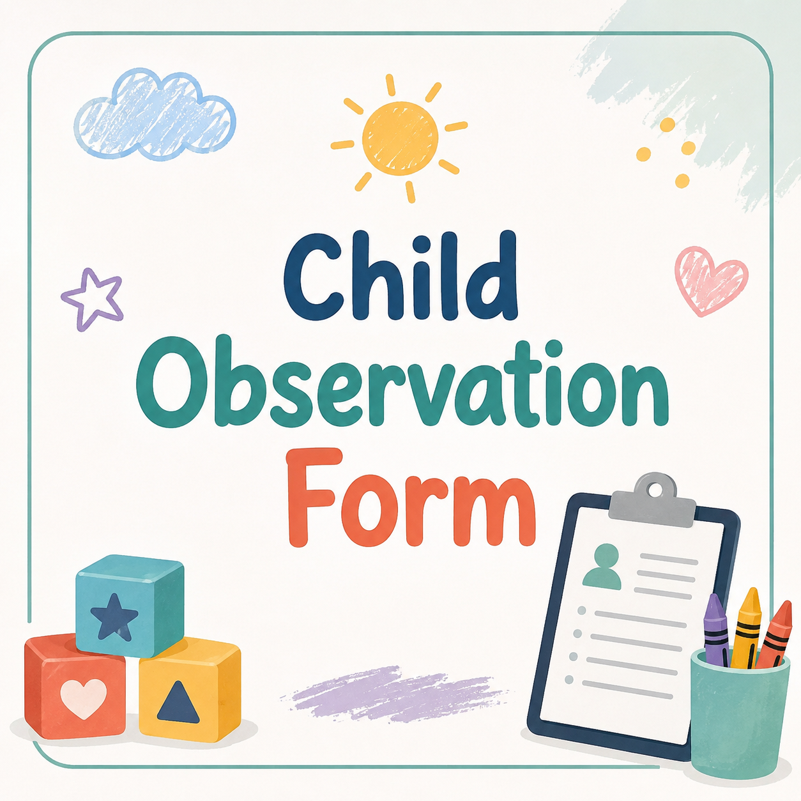
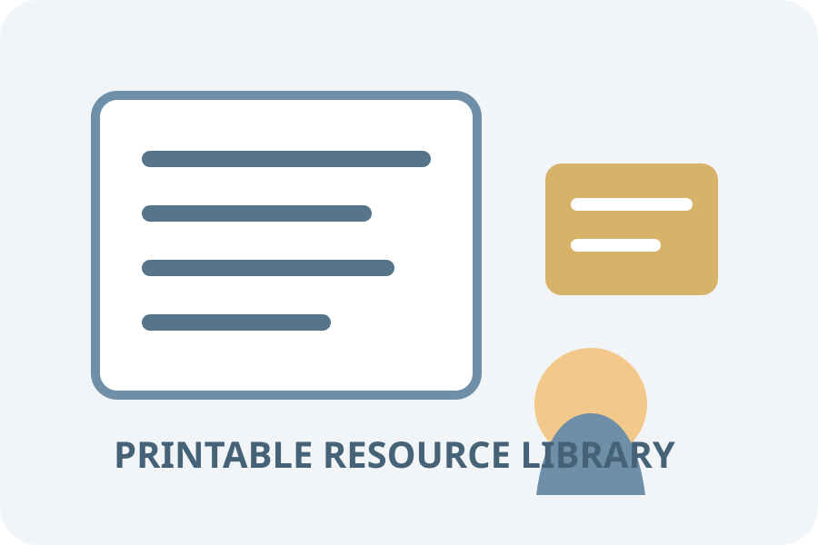
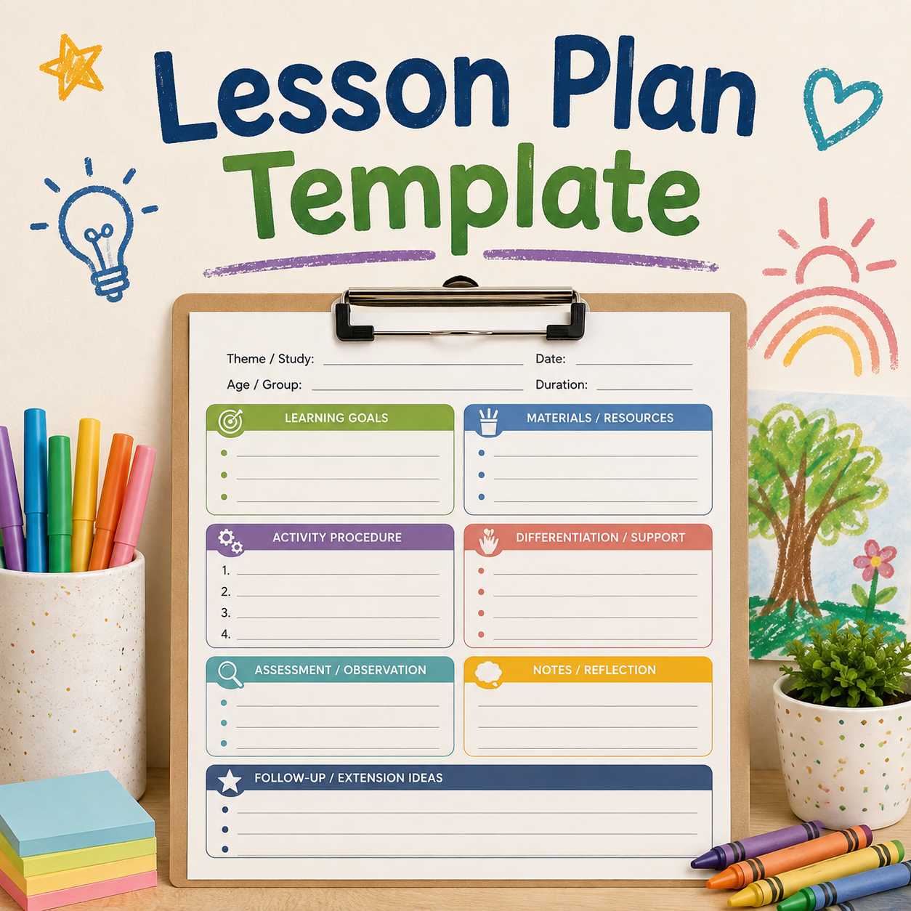
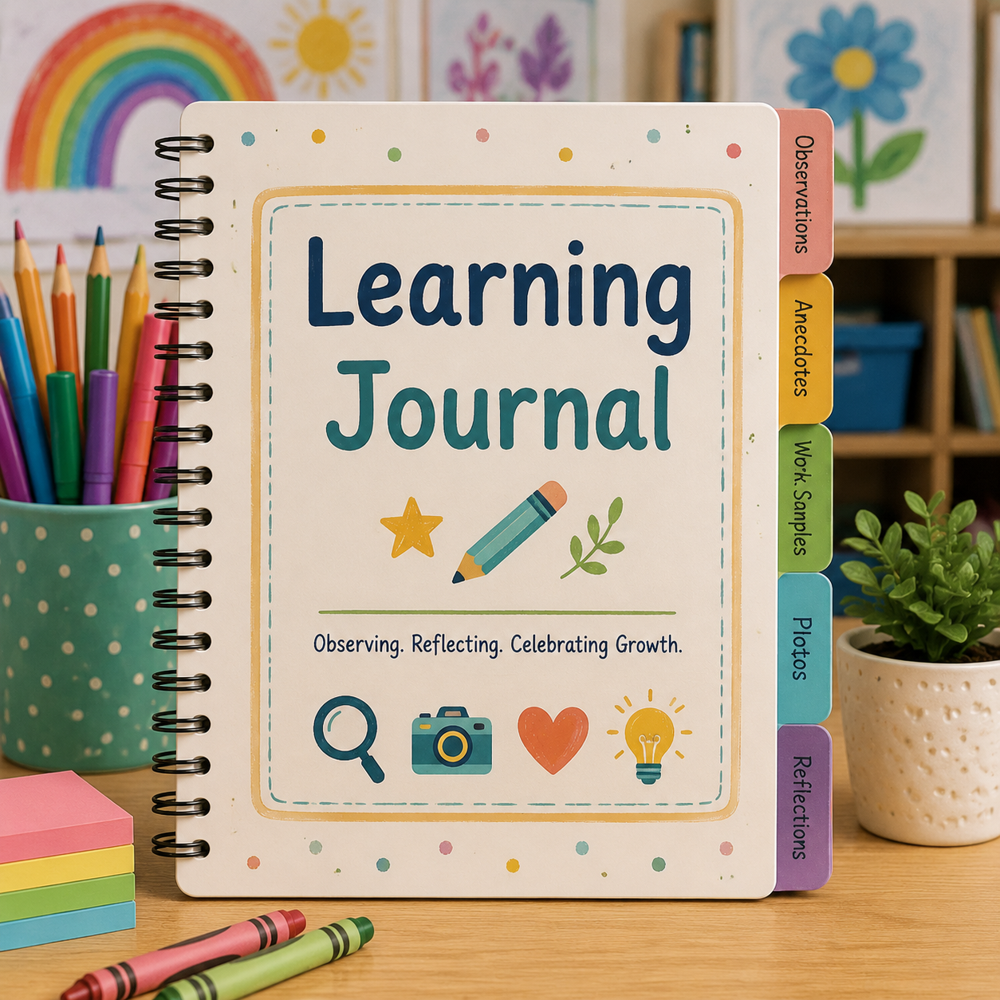
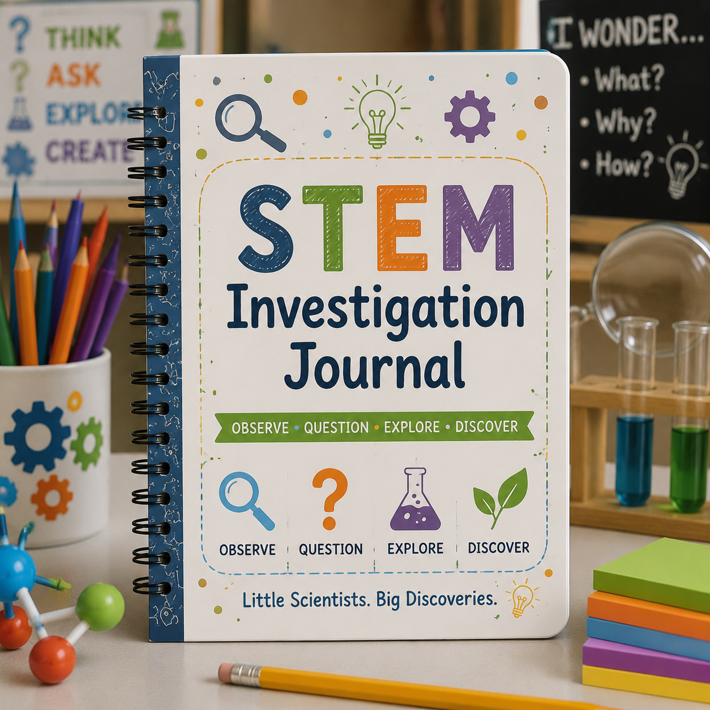
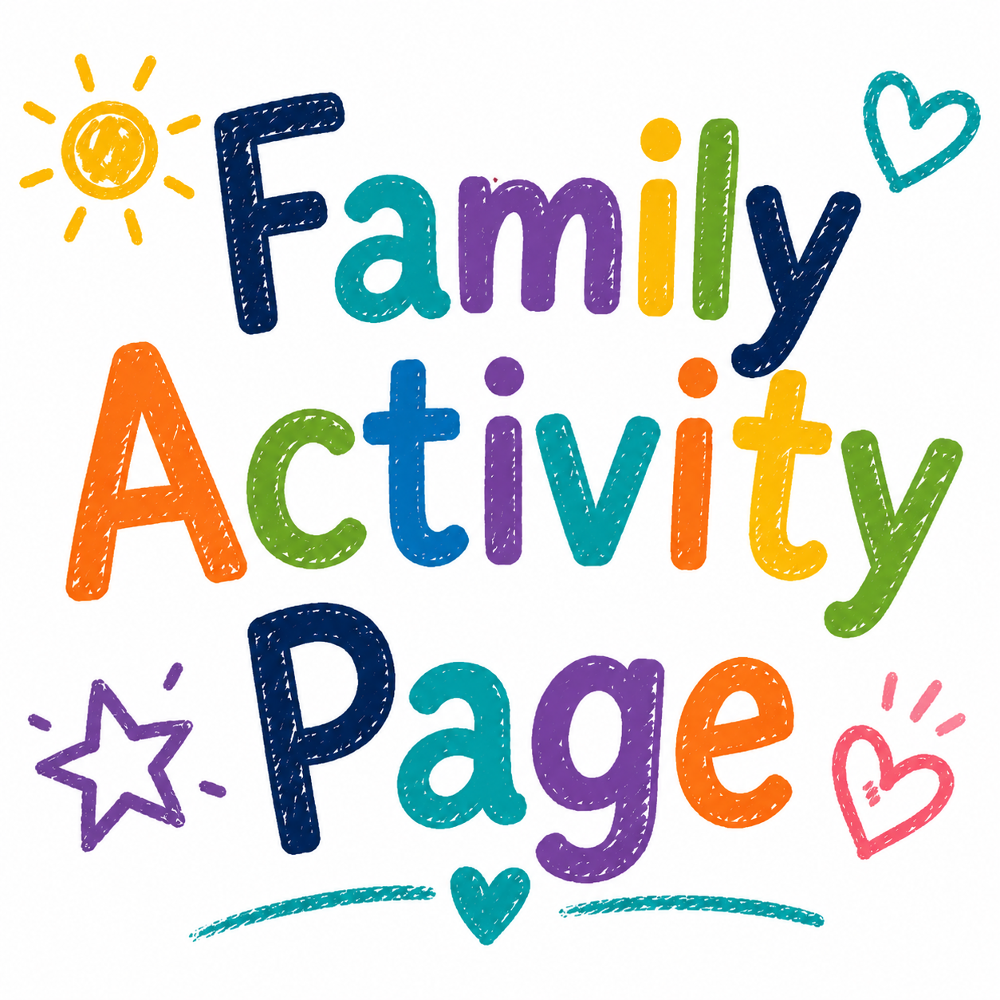
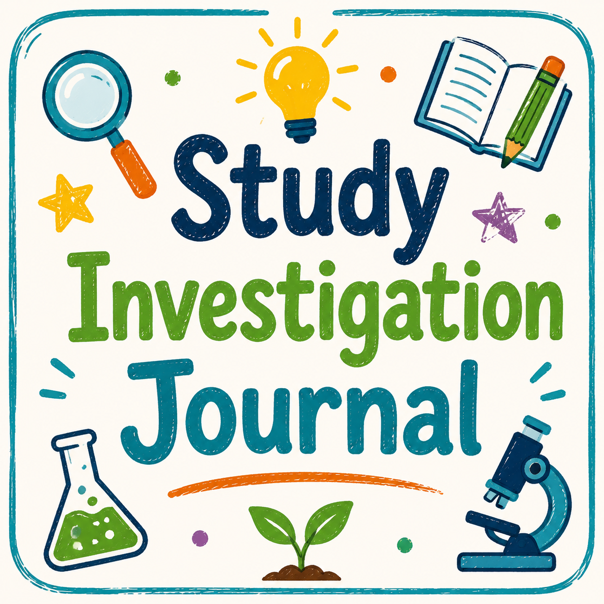

📋 Child Observation Form
Document children's learning moments, interests, conversations, discoveries, and developmental progress.
Access classroom-ready printable resources including lesson planning tools, observation forms, assessment documents, activity pages, journals, and learning resources designed for Early Head Start, Head Start, Preschool, and Pre-K educators.

The Printable Library provides educators with easy-to-use resources that support planning, documentation, assessment, classroom activities, and children's learning experiences. Find tools created to help teachers organize, observe, and extend meaningful learning.
Find classroom-ready documents designed to support planning, teaching, observation, assessment, and children's learning experiences.
Daily plans, weekly planning sheets, activity organizers, and classroom preparation tools.
View Printables →Observation forms, anecdotal notes, learning stories, and documentation resources.
View Printables →Development tracking forms, assessment records, and learning progress documentation.
Assessment Resources →Journals, investigation pages, study guides, and learning extensions connected to classroom studies.
Explore Curriculum →Science investigation sheets, engineering challenges, prediction pages, and discovery records.
View Printables →Take-home activities, family connection pages, and learning experiences families can enjoy together.
Explore Resources →Print classroom tools, learning journals, documentation forms, and activity resources designed for early childhood educators.

Document children's learning moments, interests, conversations, discoveries, and developmental progress.

Organize objectives, materials, activities, questions, and classroom extensions.

Encourage children to record ideas, drawings, observations, and discoveries.

Support predictions, observations, experiments, and engineering challenges.

Connect classroom learning with simple activities families can enjoy together.

Help children record questions, ideas, observations, and discoveries during classroom studies.
Find developmentally appropriate printable resources designed for different early childhood learning stages.
Simple documentation tools, sensory activities, developmental observations, and early learning experiences for younger children.
Explore Resources →Creative activity pages, journals, learning center resources, and classroom documentation tools for preschool learners.
Explore Resources →School readiness activities, learning journals, literacy tools, math resources, and assessment supports.
Explore Resources →Helpful printable tools that support organization, planning, documentation, and intentional teaching.
Organize lessons, activities, materials, objectives, and classroom experiences.
Print Tool →Record observations, children's ideas, progress, and meaningful learning moments.
Print Tool →Support children's predictions, discoveries, questions, and STEM exploration.
Print Tool →Support storytelling, vocabulary, writing, and early reading experiences.
Print Tool →Explore counting, sorting, patterns, measurement, and problem solving.
Print Tool →Extend curriculum studies with journals, activity pages, and investigation resources.
Print Tool →Open a classroom resource, then print it or save it as a PDF. Interactive web forms are designed for printing; entries may not be saved when you leave or refresh the page.
Plan objectives, daily experiences, materials, ELOF connections, individualization, observations, and family partnerships.
Open Editable Planning Form →Choose from observation, anecdotal notes, learning stories, and other documentation resources.
Open Observation Tools →Document strengths, patterns, possible triggers, replacement skills, proactive supports, and review steps.
Open Support Plan →Record observable behavior and context using objective, nonjudgmental language.
Open Behavior Logs →Organize the day's schedule, learning experiences, materials, and reminders.
Open Printable PDF →Keep a professional record of classroom to home communication and follow-up.
Open Printable PDF →Capture children's questions, predictions, observations, and discoveries during a study.
Open Printable PDF →Share simple ideas that connect classroom learning with everyday home experiences.
Open Printable PDF →Review and organize classroom materials, supplies, and learning center resources.
Open Printable PDF →